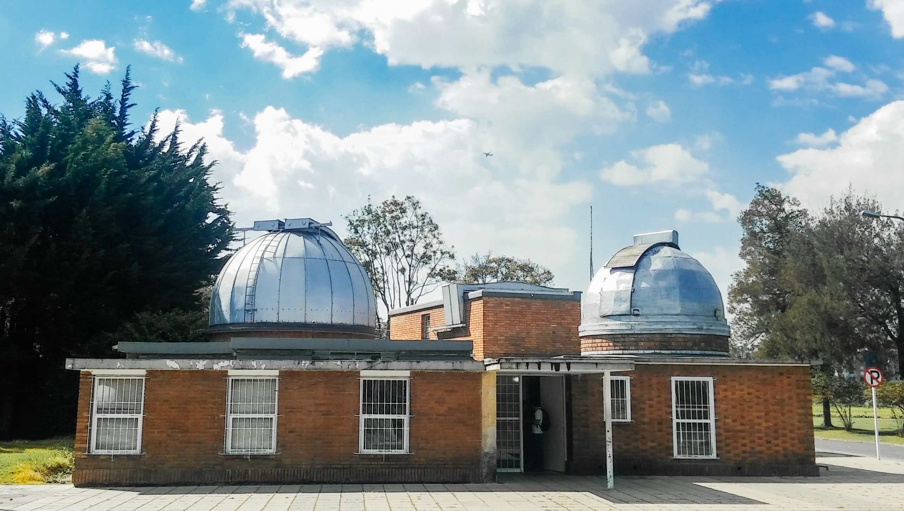

Large dome
A space to learn how to operate astronomical instruments and software, take practical classes and undertake research and outreach. Its service profile includes astronomical observations and 3D printing of instrument components.
Source: Large dome — laboratory profile ↗.
Small dome
A laboratory for telescope observations and learning observational techniques. It connects classroom concepts with instrument operation and data acquisition.
Source: Small dome — laboratory profile ↗.
Photography · Darkroom
The institutional profile includes photography and film development, introductory spectroscopy and outreach activities. It is a place to explore light as a carrier of information and the techniques used to record it.
The telescope donated by Rodolfo Llinás
INSTRUMENTATIONThe arrival of a reflecting telescope with a 106-centimeter mirror expands the OAN's research and educational opportunities. National media have documented Rodolfo Llinás's donation and the instrument's installation.
Contact the Observatory about commissioning progress, availability for projects and access procedures. Visiting the domes does not provide unrestricted access to equipment.
Source: EL TIEMPO: Rodolfo Llinás's telescope ↗.
Enquire about a visit ↗